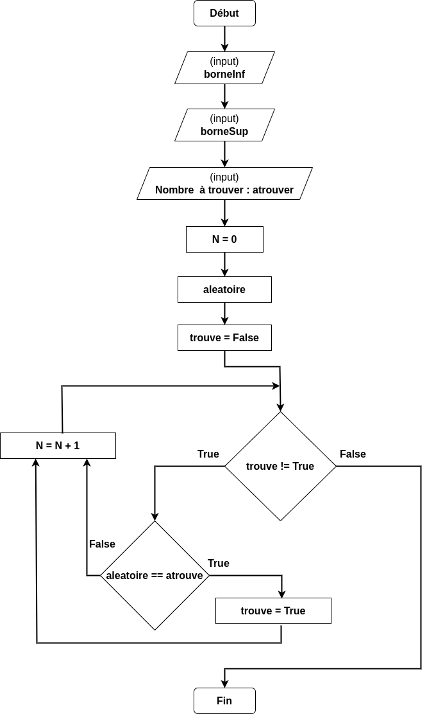

TP2-PROG-02 : Approche pratique de la complexité : Recherche
Contents

TP2-PROG-02 : Approche pratique de la complexité : Recherche#
Objectifs pédagogiques#
être capable de comprendre plusieurs algorithmes différents pour le problème de la recherche d’un élément dans une liste triée
recherche linéaire
recherche aléatoire sans remise
recherche aléatoire avec remise
recherche dichotomique
être capable de comprendre les programmes en Python qui implémentent ces algorithmes
mesurer la performance des algorithmes
déduire le comportement asymptotique et la complexité
Algorithmes de recherche#
Les quatre algorithmes de recherche étudiés répondent tous au même problème à résoudre : trouver un nombre aléatoire dans des nombres triés entre une borne inférieure borneInf et une borne supérieure borneSup
Afin de les comparer, nous calculons le nombre de comparaisons qu’il faut effectuer. Cette grandeur est nommée N tout au long du TP. C’est ce N que nous allons comparer.
Recherche linéaire#
L’algorithme est le plus simple :
On choisi un nombre aléatoire qu’il faut rechercher:
atrouveOn initialise une variable
nombre = borneInf:si
nombre == atrouve, alors on arrêtesinon, on passe au nombre suivant
tout cela est fait
tant que nombre != borneSup
L’algorigramme est le suivant :

# Recherche linéaire commentée
# Vincent Keller, 2023
# Importation de la bibliothèque random (nombres aléatoires)
import random
# Input borneInf
borneInf = 0
# Input borneSup
borneSup = 100
# variable atrouver : nombre aléatoire de type entier compris entre borneInf et borneSup (compris)
atrouver = random.randint(borneInf,borneSup)
# N est la variable qui contiendra le nombre de comparaisons
N = 0
# nombre est la variable qui contient l'itérateur entre borneInf et borneSup
nombre = 0
# trouve est une variable de type booléen.
trouve = False
# Boucle "tant que la variable trouve n'est pas égale à True)
while (trouve!=True):
# Si le nombre est égal à celui à trouver (atrouver), alors la variable trouve devient True
if (nombre==atrouver):
trouve=True
# on incrémente l'itérateur
nombre = nombre + 1
# On incrémente le nombre de comparaisons
N = N + 1
# Output : affichage du nombre à trouver et du nombre de comparaisons
print("Nombre d'opérations pour trouver "+str(atrouver)+" : "+str(N))
Nombre d'opérations pour trouver 31 : 32
Recherche aléatoire avec remise#
L’algorithme est le suivant :
On choisi un nombre aléatoire qu’il faut rechercher:
atrouveOn choisi un nombre aléatoire :
nombretant que
nombre != atrouve:si
nombre == atrouve, alors on arrêtesinon, choisi un nouveau nombre aléatoire :
nombre
On note que cet algorithme peut faire ressortir plusieurs fois le même nombre aléatoire. C’est pourqoi il s’appelle recherche aléatoire avec remise.
L’algorigramme est le suivant :

# Recherche aléatoire avec remise dans une liste triée commentée
# Vincent Keller, 2023
# Importation de la bibliothèque random (nombres aléatoires)
import random
# Input borneInf
borneInf = 0
# Input borneSup
borneSup = 100
# variable atrouver : nombre aléatoire de type entier compris entre borneInf et borneSup (compris)
atrouver = random.randint(borneInf,borneSup)
# N est la variable qui contiendra le nombre de comparaisons
N = 0
# trouve est une variable de type booléen.
trouve = False
# Boucle "tant que la variable trouve n'est pas égale à True)
while (trouve!=True):
# On tire un nombre que l'on assigne à la variable aleatoire
aleatoire = random.randint(borneInf,borneSup)
# Si le nombre à trouver est égal au nombre aléatoire tiré, alors on sort de la boucle
if (aleatoire == atrouver) :
trouve=True
# On incrémente le nombre de comparaisons
N = N + 1
# Output : affichage du nombre à trouver et du nombre de comparaisons
print("Nombre d'opérations pour trouver "+str(atrouver)+" : "+str(N))
Nombre d'opérations pour trouver 0 : 55
Recherche aléatoire sans remise#
L’algorithme est proche du précédent mais l’algorithme ne tire pas deux fois le même nombre
# Recherche aléatoire sans remise commentée
# On ne tire jamais le même nombre aléatoire à chaque itération
# Vincent Keller, 2023
# Importation de la bibliothèque random (nombres aléatoires)
import random
# Définition d'une fonction qui retourne un nombre aléatoire qui n'a jamais été tiré
# Argument 1 : already : liste qui contient tous les nombres aléatoires déjà tirés
# Argument 2 : bmin : borne inférieure pour la fonction randint
# Argument 3 : bmax : borne supérieure pour la fonction randint
# Return : un nombre aléatoire jamais tiré auparavant
# ATTENTION : CETTE FONCTION EST PARTICULIEREMENT COMPLEXE, VOUS N'AVEZ PAS BESOIN D'EN COMPRENDRE
# TOUTES LES SUBTILITES
def random_non_tire(already,bmin,bmax):
ret = 0
nontire = False
while nontire != True :
aleat = random.randint(bmin,bmax)
tire = False
for i in range(len(already)):
if already[i] == aleat :
tire = True
if tire == False:
nontire = True
return aleat
# Input borneInf
borneInf = 0
# Input borneSup
borneSup = 100
# variable atrouver : nombre aléatoire de type entier compris entre borneInf et borneSup (compris)
atrouver = random.randint(borneInf,borneSup)
# N est la variable qui contiendra le nombre de comparaisons
N = 0
# trouve est une variable de type booléen.
trouve = False
# deja_tire est une liste qui contient tous les nombres aléatoires déjà tirés
# Initialisation à une liste vide
deja_tire = []
# Boucle "tant que la variable trouve n'est pas égale à True)
while (trouve!=True):
# On tire un nombre jamais tiré que l'on assigne à la variable aleatoire
aleatoire = random_non_tire(deja_tire,borneInf,borneSup)
# Si le nombre à trouver est égal au nombre aléatoire tiré, alors on sort de la boucle
if (aleatoire == atrouver) :
trouve=True
# On incrémente le nombre de comparaisons
N = N + 1
# on ajoute le nombre à la liste des aléatoires déjà tirés
deja_tire.append(aleatoire)
# Output : affichage du nombre à trouver et du nombre de comparaisons
print("Nombre d'opérations pour trouver "+str(atrouver)+" : "+str(N))
Nombre d'opérations pour trouver 35 : 31
Recherche dichotomique#
L’algorithme est le suivant :
On choisi un nombre aléatoire qu’il faut rechercher:
atrouveOn initialise une variable booléenne
trouve = FalseOn initialise une variable
bmax = borneSupOn initialise une variable
bmin = borneInfTant que
trouve != True:on calcule la moitié des nombres :
moitie = int((bmax+bmin)/2)si
moitie == atrouve, alors on arrête :trouve = Truesinon si
moitie > atrouver, alorsbmax = moitiesinon si
moitie < atrouver, alorsbmin = moitie
L’algorigramme est le suivant :

# Recherche dichotomique commentée
# Vincent Keller, 2023
# Importation de la bibliothèque random (nombres aléatoires)
import random
# Input borneInf
borneInf = 0
# Input borneSup
borneSup = 100
# variable atrouver : nombre aléatoire de type entier compris entre borneInf et borneSup (compris)
atrouver = random.randint(borneInf,borneSup)
# N est la variable qui contiendra le nombre de comparaisons
N = 0
# trouve est une variable de type booléen.
trouve = False
# déclaration de la variable bmax qui contient la borne supérieure temporaire après division par 2
# A l'initialisation, elle contient la borne supérieure globale borneSup
bmax = borneSup
# déclaration de la variable bmin qui contient la borne inférieure temporaire après division par 2
# A l'initialisation, elle contient la borne inférieure globale borneInf
bmin = borneInf
# Boucle "tant que la variable trouve n'est pas égale à True)
while (trouve!=True):
# on calcule l'élément à la moitié des deux bornes temporaires
moitie = int((bmax+bmin)/2)
# si moitie est égal au nombre à trouver, on sort de la boucle
if (moitie == atrouver) :
trouve=True
# sinon, si le nombre à trouver est situé avant de la moitié, alors la borne supérieure
# temporaire devient moitie
elif (moitie > atrouver) :
bmax = moitie
# sinon, si le nombre à trouver est situé au-delà de la moitié, alors la borne inférieure
# temporaire devient moitie
elif (moitie < atrouver) :
bmin = moitie
# On incrémente le nombre de comparaisons
N = N + 1
# Output : affichage du nombre à trouver et du nombre de comparaisons
print("Nombre d'opérations pour trouver "+str(atrouver)+" : "+str(N))
Nombre d'opérations pour trouver 89 : 7
Exercice 1#
copiez-collez les 4 programmes dans un dossier
TP2sur votre volume personnel
Vous devriez vous retrouver avec 4 fichiers :
recherche_lineaire.pyrecherche_aleatoire_sans_remise.pyrecherche_aleatoire_avec_remise.pyrecherche_dichotomique.py
Exercice 2 : Complexité d’un algorithme#
Rappel : la complexité d’un algorithme se déduit de l’équation qui décrit le nombre d’opérations (ou d’instructions N (durnat ce TP, N représente le nombre de comparaisons) en fonction de la taille du problème b. Dans cet exercice nous allons trouver la fonction f de l’équation N = f(b)
Choisissez un algorithme de recherche parmi les 4 codes
observez la variable qui fait varier la taille du problème. Cela sera la variable
bModifiez votre code pour qu’il mesure des valeurs de
NentreborneInf = 0et une borne supérieure variablebde
100à10000
Dans un classeur Excel, reportez les valeurs de
Nen fonction debDécrivez la complexité de l’algorithme
Attention : pour pouvoir copier-coller les valeurs dans Excel, vous devriez afficher les valeurs de Ǹ en fonction de b, utilisez la fonction suivante :
print(b,"\t",N)
Exercice 3 : Moyenne caractéristique#
Afin d’obtenir des grandeurs caractéristiques, il est utile d’obtenir différentes valeurs dont on prendra la moyenne.
Pour chaque algorithme, écrivez une boucle qui calcule une moyenne de 10 nombres aléatoires à trouver
Testez pour chacun des 4 algorithmes
Par exemple :
import random
borneInf = 0
borneSup = 100
somme = 0
for i in range(10):
atrouver = random.randint(borneInf,borneSup)
N = 0
nombre = 0
trouve = False
while (trouve!=True):
if (nombre==atrouver):
trouve=True
nombre = nombre + 1
N = N + 1
somme = somme + N
print("Nombre moyen pour la recherche linéaire : "+str(somme/10))
Nombre moyen pour la recherche linéaire : 50.2
Exercice 4 : Comparaison des algorithmes#
Modifiez les 4 implémentations des algorithmes de recherche. Il est maintenant possible de les comparer avec les mêmes bornes borneInf, borneSup et le nombre aléatoire à trouver atrouver
Modifiez votre code afin de mesurer les valeurs de
NentreborneInf = 0et différentes valeurs deborneSup:100à100000avec un pas de 200
Dans un graphique Excel, notez toutes les valeurs sur 5 colonnes :
borneSup, et les 4Nretournés pour chaque algorithmeN_linest la variable contenant le nombre de comparaisons pour la recherche linéaireN_alaest la variable contenant le nombre de comparaisons pour la recherche aléatoire avec remiseN_alsest la variable contenant le nombre de comparaisons pour la recherche aléatoire sans remiseN_dicest la variable contenant le nombre de comparaisons pour la recherche dichotomique
Exercice 5 : Comportement asymptotique de la complexité des 4 algorithmes#
Le comportement asymptotique représente le comportement de la fonction mathématique décrivant la complexité d’un algorithme. Dans le pire des cas, c’est celui qui est décrit par la notation Big O ou \(\mathcal{O}\).
Par exemple : \(\mathcal{O}(n)\) est un comportement linéaire, \(\mathcal{O}(n^2)\) est quadratique, \(\mathcal{O}(n\log{}n)\) est linéarithmique, etc..
A l’aide de votre graphique Excel, êtes-vous capable d’estimer une fonction qui passerait par les points mesurés ?
Si oui, lesquelles ?
Sinon pourquoi ?